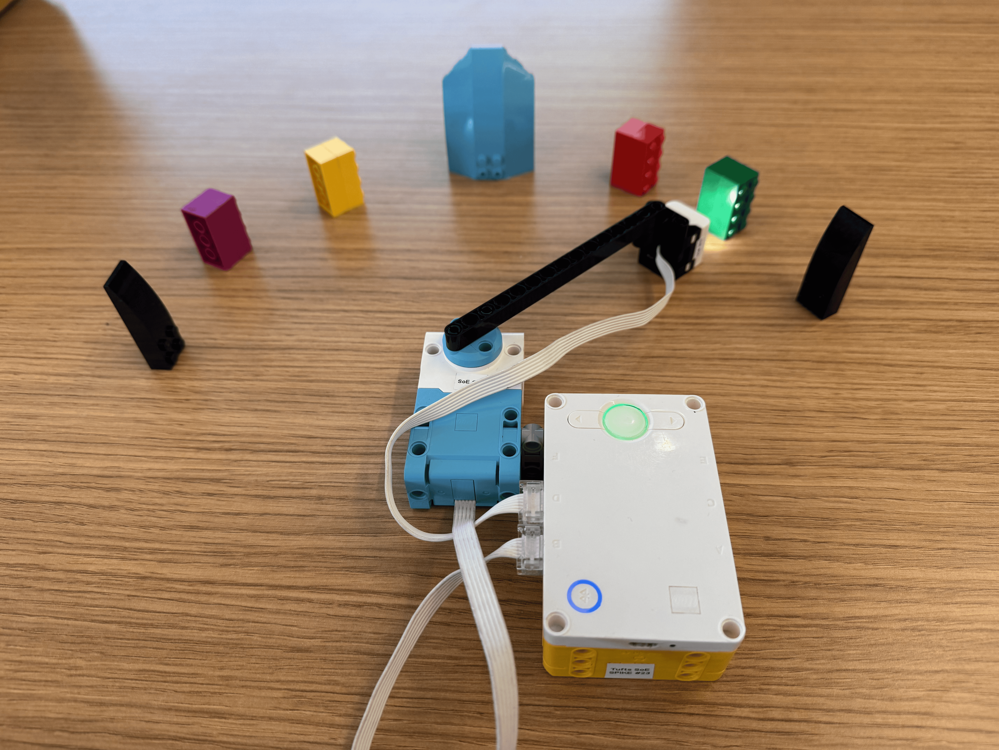

This project used reinforcement learning in order to create an algorithim that could identify the green block in the sequence using the color sensor. The color sensor was attached to an arm connected to a motor and the program would rotate from its inital starting sequence in order to find the green block. Based off the color it sees, it creates and updates a Q-table that allows it to learn the best path to take in order to find the green block. If it reached the borders of the black pieces, points would be deducted and the program would have to start over, but if it reached the green pieces it would be rewarded. One bug that I noticed was that the program tended to hit the right border if it manages to reach the yellow block even after several rounds of testing. This might have tobe related to the learning rate being too low. One of the things that I noticed when we changed the orientation of the blocks was that the robot was able to quickly adjust to the new enviornment after a few new trials. It took only 4 retraining episodes to learn the new orientation.
# =====================================================================
# 1D COLOR SEARCH - Reinforcement Learning on LEGO SPIKE Prime
# =====================================================================
# A color sensor on a swinging arm scans a row of LEGO bricks laid out
# in an arc. One brick is the GOAL color. The bricks at both ends are
# BOUNDARY bricks. The robot does not know where the goal is. It does
# not even know which colors are on the track - it discovers them as
# it explores!
#
# It learns by trial and error, using Q-learning:
# - STATE = the color the sensor is over (that is how it knows where it is)
# - ACTION = sweep LEFT or sweep RIGHT to the next brick
# - REWARD = points for what happens: + for the goal, - for a boundary,
# and a small - for every other move (so shorter is better)
# The robot keeps a score, called a Q-value, for every (color, action)
# pair in a table: the Q-table. The table starts EMPTY. Each time the
# robot finds a new color, it adds a row. After some training, the
# table tells it which way to go from any brick.
#
# Nothing about your track is written in this program, so you can
# rearrange the bricks (or swap in new colors) and the robot will learn
# the new layout. Try rearranging AFTER training: watch the old Q-table
# send the robot the wrong way, and then watch it re-learn.
#
# First developed by Tanushree Burman, Tufts CEEO, 2024
# Adapted for the ML workshop, October 21, 2024
# Cleaned up and connected to the web dashboard (index.html), 2026
#
# HARDWARE
# Arm motor ......... Port B
# Color Sensor ...... Port D (on the end of the arm, facing the bricks)
# Leave a small gap between bricks. Every brick must be a different
# color, except the two boundary bricks at the ends.
#
# CHECK YOUR SETUP FIRST with read_color.py: it shows what the sensor
# reads for every brick, so you can fix lighting or brick placement
# before the robot starts learning.
#
# BUTTONS (while the program is running)
# RIGHT button ...... TRAIN: run one episode, exploring and learning
# LEFT button ....... TEST: use what it learned (no random moves, no learning)
# Either button during a run stops that run early.
# Center button ..... ends the program (this erases what it learned!)
#
# Before each run, turn the arm BY HAND so the sensor is over any
# colored brick (not the goal, not a boundary). Try many different
# starting bricks - the robot can only learn about places it has been.
#
# The light matrix shows how many training episodes are done.
# The center button light shows the color the sensor is on.
#
# WEB DASHBOARD (optional)
# Open index.html in Chrome or Edge and connect over USB or Bluetooth
# to watch the arm, the Q-table and the learning progress live.
# Lines starting with ">>" tell you what to do next.
# Lines starting with "@" are data for the dashboard.
# =====================================================================
from hub import port, button, light, light_matrix, sound
import color
import color_sensor
import motor
import random
import runloop
import time
# =====================================================================
# SETTINGS - change these to match your robot and to experiment
# =====================================================================
# ---- Ports ----
ARM_MOTOR_PORT = port.B
COLOR_SENSOR_PORT = port.D
# ---- Your track ----
# You do NOT list your bricks: the robot discovers each color itself.
# Just tell it which color is the goal and which color marks the ends.
# Colors you can use: BLACK, MAGENTA, PURPLE, BLUE, AZURE, TURQUOISE,
# GREEN, YELLOW, ORANGE, RED, WHITE
GOAL_COLOR = color.GREEN # the brick the robot is searching for
BOUNDARY_COLOR = color.BLACK # the bricks at both ends of the track
IGNORE_COLORS = [] # colors that are NOT bricks, for example the table
# showing through the gaps: [color.WHITE]
# (read_color.py shows what your gaps read as)
# ---- Rewards: how good or bad each outcome is ----
REWARD_GOAL = 10 # landed on the goal brick (the episode ends)
REWARD_BOUNDARY = -10 # landed on a boundary brick (the episode ends)
REWARD_STEP = -1 # any other move: a small cost, so shorter paths win
# ---- Learning settings ----
ALPHA = 0.5 # learning rate (0 to 1): how much one new experience changes a Q-value
GAMMA = 0.9 # discount (0 to 1): how much future rewards count compared to right now
EPSILON = 0.1 # exploration (0 to 1): chance of a random move while TRAINING
MAX_STEPS = 15 # an episode stops after this many moves, even without reaching an end
# ---- Arm movement and color sensing (keep these the same in read_color.py) ----
SWEEP_SPEED = 30 # arm speed in degrees per second (slower = more reliable colors)
MOTOR_DIRECTION = 1 # if the arm moves RIGHT when the robot says LEFT, change to -1
CONFIRM_READINGS = 4 # the same color this many times in a row = "I'm on a new brick"
# (raise it if the arm stops on wrong colors at brick edges;
# lower it if the arm sweeps right past small bricks)
READING_GAP_MS = 25 # milliseconds between color readings
SWEEP_TIMEOUT_MS = 10000 # give up if no new brick shows up within this time
# ---- Sound and printing ----
VOLUME = 60 # hub speaker volume (0 to 100); 0 = silent
PRINT_QTABLE_AFTER_RUN = True # print the Q-table in the console after every run
DASHBOARD_LINES = True # print the "@..." data lines that the web dashboard needs.
# Set to False for a tidier console without the dashboard.
# =====================================================================
# You do not need to change anything below to get started,
# but reading it is the best way to see how Q-learning works!
# =====================================================================
ACTIONS = ["LEFT", "RIGHT"] # action number 0 = sweep LEFT, 1 = sweep RIGHT
LEFT = 0
RIGHT = 1
COLOR_NAMES = {
color.BLACK: "BLACK", color.MAGENTA: "MAGENTA", color.PURPLE: "PURPLE",
color.BLUE: "BLUE", color.AZURE: "AZURE", color.TURQUOISE: "TURQUOISE",
color.GREEN: "GREEN", color.YELLOW: "YELLOW", color.ORANGE: "ORANGE",
color.RED: "RED", color.WHITE: "WHITE", color.UNKNOWN: "NONE",
}
def color_name(c):
return COLOR_NAMES.get(c, str(c))
def color_list(colors):
"""Color names joined by commas, or 'none' for an empty list."""
if len(colors) == 0:
return "none"
return ",".join(color_name(c) for c in colors)
def num(x):
"""A number as text with 2 decimals: -0.5 -> '-0.50'."""
return "{:.2f}".format(x)
def num_list(values):
"""Numbers as text with no spaces: [1, -0.5] -> '[1.00,-0.50]'."""
return "[" + ",".join(num(v) for v in values) + "]"
def signed(n):
"""An integer with a + sign if positive: 10 -> '+10'."""
if n > 0:
return "+" + str(n)
return str(n)
def data(line):
"""Print a data line for the web dashboard.
Keep these lines short (under about 200 characters): the hub can cut off
long printed lines before they reach the computer."""
if DASHBOARD_LINES:
print("@" + line)
def tell(text):
"""Tell the student what to do next (the dashboard shows this in big letters)."""
print(">> " + text)
# =====================================================================
# THE AGENT - the "brain" that learns
# The agent only sees numbers: state 0, 1, 2, ... and action 0, 1, ...
# It has no idea it is a robot arm looking at colors.
# This class is exactly the same in the Smart Walker program!
# =====================================================================
class QAgent:
def __init__(self, num_states, num_actions, alpha, gamma):
self.alpha = alpha
self.gamma = gamma
self.num_actions = num_actions
# The Q-table: one row per state, one column per action.
# Everything starts at 0 because the agent knows nothing yet.
self.q = [[0.0] * num_actions for _ in range(num_states)]
def add_state(self):
"""Add a row of zeros for a state the agent has just discovered."""
self.q.append([0.0] * self.num_actions)
def best_action(self, state):
"""The action with the highest Q-value in this state.
If several actions tie for best, pick one of them at random."""
row = self.q[state]
best = max(row)
ties = [a for a in range(len(row)) if row[a] == best]
return random.choice(ties)
def choose_action(self, state, epsilon):
"""Epsilon-greedy: usually EXPLOIT (pick the best known action),
but with probability epsilon EXPLORE (pick a random action).
Returns (action, explored)."""
if random.random() < epsilon:
return random.randint(0, len(self.q[state]) - 1), True
return self.best_action(state), False
def learn(self, state, action, reward, next_state, done):
"""The Q-learning update rule:
new Q = old Q + alpha * (reward + gamma * best_next - old Q)
best_next is the best Q-value in the state we landed in: how good
things look from here on. If the episode is over there is no future,
so best_next is 0. Returns (old Q, best_next, new Q)."""
old = self.q[state][action]
if done:
best_next = 0.0
else:
best_next = max(self.q[next_state])
target = reward + self.gamma * best_next
new = old + self.alpha * (target - old)
self.q[state][action] = new
return old, best_next, new
# =====================================================================
# THE ENVIRONMENT - the robot's world: arm, sensor, bricks, rewards
# =====================================================================
class ColorTrack:
def __init__(self):
# The STATES are the brick colors where the robot has to decide which
# way to go, in the order it discovered them (= the rows of the
# Q-table). The goal and boundary bricks end the episode, so they are
# not states.
self.states = []
self.current = None # the color under the sensor right now
def check_setup(self):
"""Look for mistakes in the settings. Returns a list of problems."""
problems = []
if GOAL_COLOR == BOUNDARY_COLOR:
problems.append("GOAL_COLOR and BOUNDARY_COLOR must be different colors.")
if GOAL_COLOR in IGNORE_COLORS or BOUNDARY_COLOR in IGNORE_COLORS:
problems.append("IGNORE_COLORS can't include the goal or the boundary color.")
if GOAL_COLOR == color.UNKNOWN or BOUNDARY_COLOR == color.UNKNOWN:
problems.append("The goal and boundary need real colors, not UNKNOWN.")
return problems
def is_brick(self, c):
"""Does color c count as a brick? (Gaps read as UNKNOWN.)"""
return c != color.UNKNOWN and c not in IGNORE_COLORS
def is_end(self, c):
return c == GOAL_COLOR or c == BOUNDARY_COLOR
def state_number(self, c):
"""The row of the Q-table for color c."""
return self.states.index(c)
def read_color(self):
return color_sensor.color(COLOR_SENSOR_PORT)
async def read_steady_color(self):
"""Read the sensor a few times. Returns the color if every reading
agrees, or color.UNKNOWN if the readings are jumping around."""
first = self.read_color()
for _ in range(CONFIRM_READINGS - 1):
await runloop.sleep_ms(READING_GAP_MS)
if self.read_color() != first:
return color.UNKNOWN
return first
async def sweep(self, action):
"""Swing the arm LEFT or RIGHT until the sensor is on a NEW brick.
Returns "ok", "stopped" (a button was pressed) or "lost" (timed out)."""
if action == LEFT:
direction = -1
else:
direction = 1
start_color = self.current
candidate = None # a new color we might be on
count = 0 # how many readings in a row have seen it
result = "lost"
start_time = time.ticks_ms()
motor.run(ARM_MOTOR_PORT, direction * MOTOR_DIRECTION * SWEEP_SPEED)
while time.ticks_diff(time.ticks_ms(), start_time) < SWEEP_TIMEOUT_MS:
if stop_requested():
result = "stopped"
break
seen = self.read_color()
# Gaps between bricks (no color) and IGNORE_COLORS are skipped
if seen != start_color and self.is_brick(seen):
if seen == candidate:
count += 1
else:
candidate = seen
count = 1
if count >= CONFIRM_READINGS:
self.current = seen
result = "ok"
break
else:
candidate = None
count = 0
await runloop.sleep_ms(READING_GAP_MS)
motor.stop(ARM_MOTOR_PORT, stop=motor.BRAKE)
return result
def outcome(self, c):
"""The reward for landing on color c. Returns (reward, done, result)."""
if c == GOAL_COLOR:
return REWARD_GOAL, True, "goal"
if c == BOUNDARY_COLOR:
return REWARD_BOUNDARY, True, "boundary"
return REWARD_STEP, False, "step"
def discover(agent, env, c):
"""If color c is a brick we have never seen before, it becomes a new
state: a new row of zeros in the Q-table."""
if c in env.states or env.is_end(c):
return
env.states.append(c)
agent.add_state()
if len(env.states) == 1:
count = "1 state"
else:
count = str(len(env.states)) + " states"
print("New color discovered: " + color_name(c) + " -> new row in the Q-table ("
+ count + " now)")
data("DISCOVER state=" + color_name(c) + " row=" + str(len(env.states) - 1))
# =====================================================================
# HUB HELPERS - buttons, light matrix and sounds
# =====================================================================
def stop_requested():
return button.pressed(button.LEFT) or button.pressed(button.RIGHT)
async def wait_for_release():
while stop_requested():
await runloop.sleep_ms(20)
async def wait_for_button(episodes):
"""Show the number of training episodes and wait for LEFT or RIGHT.
Returns button.LEFT or button.RIGHT."""
await wait_for_release()
light_matrix.write(str(episodes))
shown_at = time.ticks_ms()
while not stop_requested():
# Numbers with 2+ digits scroll past, so show them again every few seconds
if episodes >= 10 and time.ticks_diff(time.ticks_ms(), shown_at) > 3000:
light_matrix.write(str(episodes))
shown_at = time.ticks_ms()
await runloop.sleep_ms(20)
if button.pressed(button.RIGHT):
which = button.RIGHT
else:
which = button.LEFT
await wait_for_release()
return which
async def beep(frequency, ms):
if VOLUME > 0:
await sound.beep(frequency, ms, VOLUME)
def show_color_light(c):
"""Light the center button in the color the sensor is on."""
if c in COLOR_NAMES and c != color.UNKNOWN:
light.color(light.POWER, c)
async def show_result(result):
if result == "goal":
light_matrix.show_image(light_matrix.IMAGE_HAPPY)
await beep(660, 120)
await beep(880, 120)
await beep(1320, 250)
elif result == "boundary":
light_matrix.show_image(light_matrix.IMAGE_SAD)
await beep(220, 500)
elif result == "max_steps":
light_matrix.show_image(light_matrix.IMAGE_CONFUSED)
await beep(440, 300)
else:
light_matrix.show_image(light_matrix.IMAGE_NO)
await beep(330, 300)
await runloop.sleep_ms(1200)
# =====================================================================
# PRINTING - for people (the console) and for the web dashboard
# =====================================================================
def print_welcome():
print()
print("=================================================")
print(" 1D COLOR SEARCH with Reinforcement Learning")
print("=================================================")
print("Goal: " + color_name(GOAL_COLOR) + " Boundary (both ends): "
+ color_name(BOUNDARY_COLOR))
if IGNORE_COLORS:
print("Not bricks (ignored): " + " ".join(color_name(c) for c in IGNORE_COLORS))
print("The robot discovers the other brick colors as it explores.")
print("The Q-table starts empty: each new color adds a row.")
print("Rewards: goal " + signed(REWARD_GOAL) + ", boundary " + signed(REWARD_BOUNDARY)
+ ", any other move " + signed(REWARD_STEP))
print("Learning: alpha " + num(ALPHA) + ", gamma " + num(GAMMA)
+ ", epsilon " + num(EPSILON) + " (chance of a random move while training)")
print()
print(" RIGHT button = TRAIN one episode (explore + learn)")
print(" LEFT button = TEST what it learned (no random moves, no learning)")
print(" Press either button during a run to stop it.")
print()
def send_config():
"""Describe the activity to the web dashboard."""
data("CONFIG app=search"
+ " goal=" + color_name(GOAL_COLOR)
+ " boundary=" + color_name(BOUNDARY_COLOR)
+ " ignore=" + color_list(IGNORE_COLORS)
+ " actions=" + ",".join(ACTIONS)
+ " alpha=" + num(ALPHA) + " gamma=" + num(GAMMA) + " epsilon=" + num(EPSILON)
+ " max_steps=" + str(MAX_STEPS)
+ " reward_goal=" + str(REWARD_GOAL)
+ " reward_boundary=" + str(REWARD_BOUNDARY)
+ " reward_step=" + str(REWARD_STEP))
def send_qtable(agent, env, episodes):
"""Send the whole Q-table to the dashboard: the list of states, then
one short line per row."""
data("QTABLE app=search ep=" + str(episodes) + " states=" + color_list(env.states))
for i in range(len(env.states)):
data("QROW app=search state=" + color_name(env.states[i]) + " q=" + num_list(agent.q[i]))
def print_qtable(agent, env, episodes):
if len(env.states) == 0:
print("The Q-table is still empty: no colors discovered yet.")
print()
return
print("Q-table after " + str(episodes) + " training episode(s). Higher = better move.")
print(" {:<10}{:>8}{:>8} {}".format("color", "LEFT", "RIGHT", "best move"))
for i in range(len(env.states)):
left_q = agent.q[i][LEFT]
right_q = agent.q[i][RIGHT]
if left_q == right_q:
best = "(tie - no favorite yet)"
elif left_q > right_q:
best = "<- LEFT"
else:
best = "RIGHT ->"
print(" {:<10}{:>8}{:>8} {}".format(color_name(env.states[i]),
num(left_q), num(right_q), best))
print()
def start_problem(c):
"""Is color c a good place to start an episode? Returns a message, or None if OK."""
if c == GOAL_COLOR:
return ("The sensor is already on the goal (" + color_name(c) + ")! "
"Move the arm to a different brick, then press a button.")
if c == BOUNDARY_COLOR:
return ("The sensor is on a boundary brick. Move the arm to a colored brick "
"between the ends, then press a button.")
if c == color.UNKNOWN:
return ("I can't get a steady color. Move the sensor over the middle of a brick, "
"then press a button. (read_color.py can help you check your setup.)")
if c in IGNORE_COLORS:
return ("The sensor reads " + color_name(c) + ", which is in IGNORE_COLORS. "
"Move the sensor over a brick, then press a button.")
return None
# =====================================================================
# ONE EPISODE - a single search, from a starting brick until it ends
# =====================================================================
async def run_episode(agent, env, training, episodes, run_number):
if training:
mode = "train"
epsilon = EPSILON
print("=== TRAINING episode " + str(episodes) + ": starting on "
+ color_name(env.current) + " ===")
else:
mode = "test"
epsilon = 0.0 # no exploring during a test: always use the best action
print("=== TEST run (after " + str(episodes) + " training episodes): starting on "
+ color_name(env.current) + " ===")
data("START app=search mode=" + mode + " run=" + str(run_number)
+ " ep=" + str(episodes) + " start=" + color_name(env.current)
+ " epsilon=" + num(epsilon))
discover(agent, env, env.current)
show_color_light(env.current)
total = 0
steps = 0
result = "max_steps"
for t in range(1, MAX_STEPS + 1):
# 1. Look at the state and choose an action
here = env.current
s = env.state_number(here)
action, explored = agent.choose_action(s, epsilon)
if explored:
how = "random - exploring!"
explore_word = "yes"
elif agent.q[s][LEFT] == agent.q[s][RIGHT]:
how = "a tie, so picked at random"
explore_word = "no"
else:
how = "best move so far"
explore_word = "no"
data("CHOOSE run=" + str(run_number) + " t=" + str(t)
+ " state=" + color_name(here) + " action=" + ACTIONS[action]
+ " explore=" + explore_word + " q=" + num_list(agent.q[s]))
if explored:
light_matrix.write("?")
await beep(1800, 80)
await runloop.sleep_ms(250)
if action == LEFT:
light_matrix.show_image(light_matrix.IMAGE_ARROW_W)
else:
light_matrix.show_image(light_matrix.IMAGE_ARROW_E)
# 2. Do the action: sweep to the next brick
status = await env.sweep(action)
if status != "ok":
result = status
break
show_color_light(env.current)
# 3. Get the reward for where we landed (and remember any new color)
reward, done, kind = env.outcome(env.current)
if not done:
discover(agent, env, env.current)
steps = t
total += reward
story = (" step " + str(t) + ": on " + color_name(here) + ", chose "
+ ACTIONS[action] + " (" + how + ") -> " + color_name(env.current)
+ ", reward " + signed(reward))
line = ("STEP run=" + str(run_number) + " t=" + str(t)
+ " state=" + color_name(here) + " action=" + ACTIONS[action]
+ " explore=" + explore_word + " next=" + color_name(env.current)
+ " reward=" + str(reward))
# 4. Learn from it (only while training)
if training:
if done:
next_s = None
else:
next_s = env.state_number(env.current)
old, best_next, new = agent.learn(s, action, reward, next_s, done)
story += (" Q(" + color_name(here) + "," + ACTIONS[action] + "): "
+ num(old) + " -> " + num(new))
line += " old=" + num(old) + " best_next=" + num(best_next) + " new=" + num(new)
print(story)
data(line)
if done:
result = kind
break
motor.stop(ARM_MOTOR_PORT, stop=motor.COAST) # let the arm turn freely by hand
if result == "goal":
print("Found the GOAL in " + str(steps) + " step(s)! Total reward: " + signed(total))
elif result == "boundary":
print("Hit the boundary after " + str(steps) + " step(s). Total reward: " + signed(total))
elif result == "max_steps":
print("Used all " + str(MAX_STEPS) + " steps without reaching an end. Total reward: "
+ signed(total))
elif result == "stopped":
print("Run stopped by a button press.")
else:
print("Lost: no new brick found within " + str(SWEEP_TIMEOUT_MS // 1000)
+ " seconds. Check that the sensor passes over every brick (read_color.py"
" helps), or slow down SWEEP_SPEED. Nothing was learned from this last move.")
data("END app=search mode=" + mode + " run=" + str(run_number) + " ep=" + str(episodes)
+ " steps=" + str(steps) + " total=" + str(total) + " result=" + result)
await show_result(result)
# =====================================================================
# MAIN PROGRAM
# =====================================================================
async def main():
env = ColorTrack()
print_welcome()
problems = env.check_setup()
if problems:
for p in problems:
print("SETUP PROBLEM: " + p)
tell("Fix the settings at the top of the program and download it again.")
light_matrix.show_image(light_matrix.IMAGE_NO)
await beep(200, 600)
return
agent = QAgent(0, len(ACTIONS), ALPHA, GAMMA) # no states yet: they get discovered
episodes = 0 # training episodes so far
runs = 0 # all runs so far (training + test)
data("HELLO app=search version=2") # tells the dashboard a new session started
send_config()
send_qtable(agent, env, episodes)
motor.stop(ARM_MOTOR_PORT, stop=motor.COAST)
message = ("Turn the arm by hand so the sensor is over a colored brick. "
"Then press RIGHT to TRAIN or LEFT to TEST.")
while True:
tell(message)
which = await wait_for_button(episodes)
training = (which == button.RIGHT)
# Check the starting brick before counting this as a run
start = await env.read_steady_color()
problem = start_problem(start)
if problem:
print("Can't start yet.")
message = problem
light_matrix.show_image(light_matrix.IMAGE_NO)
await beep(300, 300)
await runloop.sleep_ms(700)
continue
env.current = start
send_config() # repeated so a dashboard that connected late can catch up
send_qtable(agent, env, episodes)
runs += 1
if training:
episodes += 1
await run_episode(agent, env, training, episodes, runs)
send_qtable(agent, env, episodes)
if PRINT_QTABLE_AFTER_RUN:
print_qtable(agent, env, episodes)
message = ("Move the arm to a new starting brick. "
"Then press RIGHT to TRAIN or LEFT to TEST.")
runloop.run(main())
# =====================================================================
# READ COLOR - check your 1D Color Search setup
# =====================================================================
# Run this BEFORE rl_color_search.py to make sure the color sensor reads
# every brick correctly. It uses the same rule as the learning program
# ("the same color several readings in a row = a brick"), so what you
# see here is what the robot will see.
#
# HOW TO USE
# - Turn the arm slowly BY HAND across the bricks, or
# - HOLD the LEFT or RIGHT button to sweep the arm with the motor,
# at the same speed the learning program uses.
# The arm stops by itself when it reaches a boundary brick.
# Every time the sensor settles on a new color, the hub prints it,
# shows its letter on the light matrix and lights the center button.
#
# Hold LEFT until the arm stops at the left end, then hold RIGHT until
# it stops at the right end. You should see your whole track, e.g.
# Bricks in order: BLACK MAGENTA BLUE AZURE GREEN YELLOW RED BLACK
#
# CHECKLIST
# 1. Every brick shows up once, with the right color name.
# 2. Gaps between bricks read as NONE (no color), not as a color.
# If a gap reads as a color (e.g. WHITE from the table), add that
# color to IGNORE_COLORS here AND in rl_color_search.py.
# 3. Holding LEFT moves the arm to the LEFT. If not, set
# MOTOR_DIRECTION = -1 here AND in rl_color_search.py.
# 4. Every brick is a different color, except the two boundary bricks.
# Wrong or flickering colors? Try: steadier light (no shadows or direct
# sun), the sensor closer to the bricks (about 1 cm), bricks centered
# under the sensor's path, or a slower SWEEP_SPEED.
#
# HARDWARE: Arm motor in Port B, Color Sensor in Port D.
# =====================================================================
from hub import port, button, light, light_matrix
import color
import color_sensor
import motor
import runloop
# =====================================================================
# SETTINGS - copy these from rl_color_search.py so both match
# =====================================================================
ARM_MOTOR_PORT = port.B
COLOR_SENSOR_PORT = port.D
SWEEP_SPEED = 30 # degrees per second
MOTOR_DIRECTION = 1 # change to -1 if holding LEFT moves the arm to the right
CONFIRM_READINGS = 4 # the same color this many times in a row = a brick
READING_GAP_MS = 25 # milliseconds between color readings
IGNORE_COLORS = [] # colors that are NOT bricks, e.g. [color.WHITE]
BOUNDARY_COLOR = color.BLACK
SHOW_DETAILS = True # also print how bright the light is and its red/green/blue values
# =====================================================================
# The program (you do not need to change anything below)
# =====================================================================
COLOR_NAMES = {
color.BLACK: "BLACK", color.MAGENTA: "MAGENTA", color.PURPLE: "PURPLE",
color.BLUE: "BLUE", color.AZURE: "AZURE", color.TURQUOISE: "TURQUOISE",
color.GREEN: "GREEN", color.YELLOW: "YELLOW", color.ORANGE: "ORANGE",
color.RED: "RED", color.WHITE: "WHITE", color.UNKNOWN: "NONE",
}
# One letter for the light matrix (K for blacK, so it differs from Blue)
LETTERS = {
color.BLACK: "K", color.MAGENTA: "M", color.PURPLE: "P", color.BLUE: "B",
color.AZURE: "A", color.TURQUOISE: "T", color.GREEN: "G", color.YELLOW: "Y",
color.ORANGE: "O", color.RED: "R", color.WHITE: "W", color.UNKNOWN: "-",
}
def color_name(c):
return COLOR_NAMES.get(c, str(c))
def is_brick(c):
return c != color.UNKNOWN and c not in IGNORE_COLORS
def report(c):
"""Print the new color and show it on the hub."""
if c == color.UNKNOWN:
line = " NONE (a gap - good, gaps should read as no color)"
elif c in IGNORE_COLORS:
line = " " + color_name(c) + " (ignored - in IGNORE_COLORS)"
else:
line = " " + "{:<10}".format(color_name(c))
if SHOW_DETAILS:
r, g, b, i = color_sensor.rgbi(COLOR_SENSOR_PORT)
line += (" light " + str(color_sensor.reflection(COLOR_SENSOR_PORT)) + "%"
+ " r/g/b " + str(r) + "/" + str(g) + "/" + str(b))
print(line)
light_matrix.write(LETTERS.get(c, "?"))
if c == color.UNKNOWN:
light.color(light.POWER, color.BLACK) # black = light off
else:
light.color(light.POWER, c)
def check_sweep(bricks):
"""After a motor sweep from one end to the other, check the list of bricks."""
middle = bricks[1:-1]
print("Full sweep, end to end: " + " ".join(color_name(c) for c in bricks))
problems = 0
for c in middle:
times = middle.count(c)
if times >= 3:
print(" PROBLEM: " + color_name(c) + " shows up between many bricks. That is probably"
" the table showing through the gaps. Add it to IGNORE_COLORS (here AND in"
" rl_color_search.py), or move the sensor closer to the bricks.")
problems += 1
break
if times > 1 or c == BOUNDARY_COLOR:
print(" PROBLEM: " + color_name(c) + " appears more than once. Each brick needs its"
" own color (or the sensor misread a brick).")
problems += 1
break
if len(middle) == 0:
print(" PROBLEM: no bricks found between the two ends.")
problems += 1
if problems == 0:
print(" Looks good: " + str(len(middle)) + " different bricks between the two "
+ color_name(BOUNDARY_COLOR) + " ends. Sweep it again to make sure it's the same"
" every time!")
print()
async def main():
print()
print("=================================================")
print(" READ COLOR - check the color sensor and track")
print("=================================================")
print("Turn the arm by hand, or HOLD the LEFT / RIGHT button to sweep it.")
print("Each new color the sensor settles on is printed below.")
print("Check: holding LEFT should move the arm to the LEFT.")
print()
print(">> Turn the arm by hand, or hold LEFT or RIGHT to sweep it across the bricks.")
motor.stop(ARM_MOTOR_PORT, stop=motor.COAST)
steady = None # the last color the sensor settled on
candidate = None # the color it is reading right now
count = 0 # how many readings in a row have matched
moving = 0 # -1 = motor sweeping left, 1 = right, 0 = stopped
last_sweep = 0 # direction of the last motor sweep
bricks = [] # bricks in the order they were seen
blocked = 0 # direction we can't go: the arm is already at that end
while True:
# ---- Buttons drive the arm ----
if button.pressed(button.LEFT):
want = -1
elif button.pressed(button.RIGHT):
want = 1
else:
want = 0
if want == blocked:
want = 0 # already at this end of the track
if want != moving:
if want == 0:
motor.stop(ARM_MOTOR_PORT, stop=motor.COAST)
else:
if want != last_sweep:
# a sweep in a new direction starts a new list of bricks
if want == -1:
print("--- sweeping LEFT ---")
else:
print("--- sweeping RIGHT ---")
bricks = []
if steady is not None and is_brick(steady):
bricks.append(steady)
last_sweep = want
motor.run(ARM_MOTOR_PORT, want * MOTOR_DIRECTION * SWEEP_SPEED)
moving = want
# ---- Read the sensor ----
c = color_sensor.color(COLOR_SENSOR_PORT)
if c == candidate:
count += 1
else:
candidate = c
count = 1
if count == CONFIRM_READINGS and c != steady:
steady = c
report(c)
if is_brick(c) and c != BOUNDARY_COLOR:
blocked = 0 # back on the track: both directions are OK again
if is_brick(c) and (len(bricks) == 0 or bricks[-1] != c):
bricks.append(c)
print(" Bricks in order: " + " ".join(color_name(b) for b in bricks))
if moving != 0 and c == BOUNDARY_COLOR and len(bricks) > 1:
# reached an end: stop so the arm doesn't run off the track
motor.stop(ARM_MOTOR_PORT, stop=motor.COAST)
blocked = moving
moving = 0
if bricks[0] == BOUNDARY_COLOR:
check_sweep(bricks)
print(">> Reached an end of the track. Hold the other button to sweep back.")
await runloop.sleep_ms(READING_GAP_MS)
runloop.run(main())